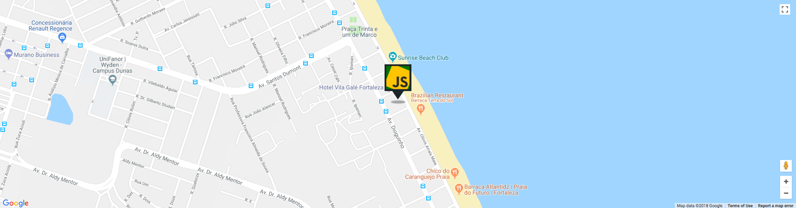

Location
Hotel Vila Galé Fortaleza
Av. Dioguinho, 4189 - Praia do Futuro. Fortaleza/CE - Brazil

The Vila Galé Fortaleza Hotel is located on the beach only 10 minutes away from the renowned Avenida Beira-Mar, in Fortaleza.
This hotel in Fortaleza features a Beach Tent as well where you can enjoy the lovely weather of North-eastern Brazil, being entitled to a bar service and all the facilities that’ll make it a great afternoon and a perfect holiday in Brazil.
Call for Papers
We are inviting the JavaScript community to submit talks for the upcoming JSConf BR. If you know someone who may deliver an interesting talk, please let us know and we'll contact them.
Our talk selection process favors content (blind selection process); We want our community to be inclusive!
If you get selected as a speaker, here's what you get:
We cover the flights and your stay at a nice Fortaleza hotel for the days of the conference. If your employer can cover your travel and hotel, we are more than happy to list them as sponsors! The money we save will be used to make the conference even better.
30 minutes to present in front of the greatest audience ever: the JSConf family!
Call for Papers Ended :(
Let us know if you need help with anything that is not listed here, we'll be more than happy to help.
We value having a safe, family-friendly, harassment-free environment, check our code of conduct.
PS: crazy topics get extra points ;)